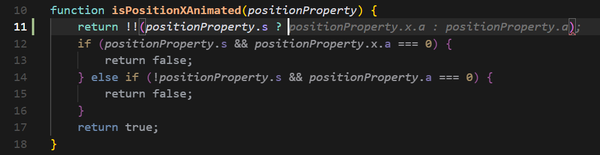
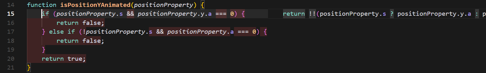
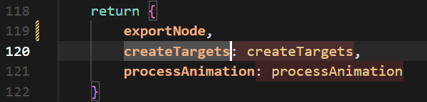
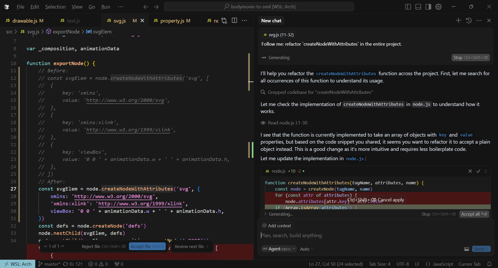
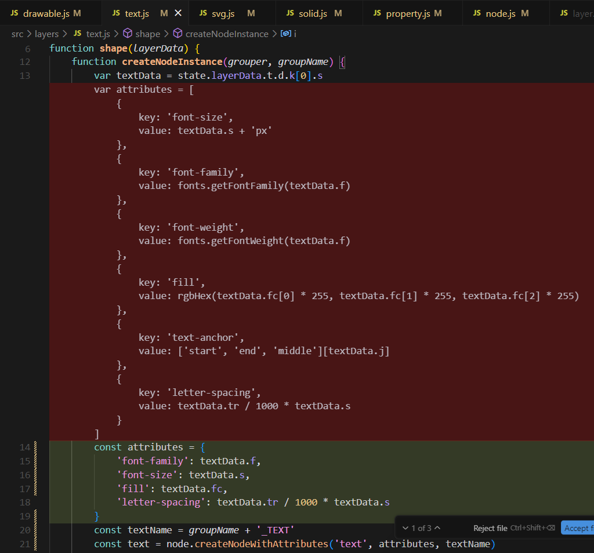

Lottie - A pet form of the female given name Charlotte.
cursor - a line on a computer screen that moves to show the point where work is being done
Synchronized Multimedia Integration Language (SMIL) is an XML-based language for writing interactive multimedia presentations.
我对风靡已久的矢量动画格式Lottie没有一点好感：
{
"v": "5.8.1",
"fr": 60,
"ip": 0, "op": 134,
"w": 1024, "h": 1024,
"nm": "pouting_cat",
"layers": [{
"ind": 1,
"ty": 3,
"sr": 1,
"ks": {
"o": {"a": 0, "k": 0},
"r": {"a": 0, "k": 0},
"p": {"a": 1, "k": [
作者Hernan Torrisi @bodymovin以前是Flash创作者，才会在Flash被弃用时明白web平台动画生态的缺乏。就因为能从After Effects导出，Lottie赢了，赢得有理有据。
Noto Color Emoji动图矢量图以Lottie格式提供。WebP和GIF格式由Lottie随意转换而来，帧率很低，带抗锯齿，适合直接嵌入，难以进一步加工利用
Lottie web播放器臃肿又难用，而我希望浏览者不需要启用JS也能观看矢量动画。SVG支持SMIL和CSS动画。@bodymovin开发了bodymovin-to-smil工具，能将Lottie动画转换为SVG + SMIL。虽然转换效果很难绷，但这已是我能找到的最好的工具了。
为了把怒猫的嘴补上，我把仓库克隆下来研究。这代码写得奇差无比！四处散落的全局状态，乱七八糟的抽象，不知所云的命名，未使用的依赖，无意义的异步，坚持用下标迭代数组……阅读这样的代码真是一种精神损伤。
AI驱动的编辑器Cursor刚推出时，我下载并安装，发现是个VS Code套壳产品，而且要注册才能用AI功能（废话），就又立刻卸载了。现在Cursor的版本是0.48.9，前几天我拿到了个同学的Cursor账号，于是来体验一下重构屎山的场景。
令我依旧感到不满的是，明明从一开始就没有什么功能是VS Code插件实现不了的，Cursor却非要fork整个编辑器，如果与VS Code同时使用就会留下双倍的垃圾。
与GitHub Copilot只能续写不同最新版一样，Cursor的Tab补全能提供编辑建议，在重构中更有用。
在代码逻辑相对独立的场合，能精准重写：
改了X之后同样修改Y：
有时候，只需要光标停留在问题代码附近，就能自动完成修改：
像这样有少量重复性但很难快速又精确地描述以便自动化的操作，AI的辅助恰到好处。给出编辑建议所需时间不到一秒，不知道是什么原理。小语言模型能做到这么快吗？
对于更大的重构，Cursor提供了agent对话面板，自动为LLM提供上下文，自动应用代码变更。
User: [@src/node.js] Whoa, I'm deeply impressed how bad this code is at modelling data. It is an interface for XML, but the nodes are represented so awfully as objects. Can you figure out what I mean? For example, how would this code represent the element Model: Let me analyze how this code represents XML elements. Looking at the code, I can see that it uses a very convoluted object structure to represent XML nodes. Let me break down how it would represent your examples: For For You're absolutely right - this is a terrible way to model XML data. Here are the key issues: Inconsistent Structure: The code uses two different patterns for children: Overly Complex Attribute Handling: Attributes are stored in a special No Clear Separation: There's no clear separation between element names, attributes, and content. Everything is mixed together in a way that makes it hard to distinguish between different parts of the XML structure. Array vs Object Ambiguity: The code has to constantly check if children are arrays or objects, which is a sign of poor data modeling. Excessive Nesting: The structure requires multiple levels of nesting to represent even simple XML elements. A better approach would be to use a more straightforward structure like: Or even better, use a proper XML DOM implementation that's already built into JavaScript. This would provide a more standard and maintainable way to work with XML data.
Would you like me to suggest a better implementation for this XML handling code?
User: [@src/node.js] Yeah, your suggestion is well-grounded. This code needs to work in Node.js so unfortunately we cannot rely on browser-only XML DOM implementations. Rewrite using your straightforward structure, but keep the API the same. You do not need to keep compatibility with old data; only the function signatures are kept. The object representation format is an implementation detail. Do not write a node class; use plain objects instead.
Model: I'll help rewrite this code with a cleaner data structure while maintaining the same API. First, let me analyze the current API by looking at the exports and function signatures.
Let me create a new implementation with the same function signatures but using a cleaner data structure. I'll write this in a new file to avoid disrupting the existing code. I've completely rewritten the implementation with a much cleaner data structure. Here are the key improvements: Consistent Node Structure: Each node is now represented as: Simplified Attribute Handling: Attributes are stored directly in an Clear Child Management: Children are always stored in an array, eliminating the need to check for array vs object cases. Modern JavaScript: Used modern JavaScript features like Simplified Logic: Removed all the complex checks for array types and attribute containers. Now your example XML elements would be represented as: The API remains exactly the same, so existing code that uses these functions won't need to change. The only difference is in how the data is structured internally, which is now much more intuitive and easier to work with.
Would you like me to explain any specific part of the implementation in more detail?
User: [@src/node.js] Now write an additional function, Model: I'll add an I've added two functions: For example: The function will handle all the XML escaping rules properly, ensuring that the output is valid XML. Would you like me to add any additional features to the serialization, such as pretty-printing or handling of CDATA sections?
Claude 3 Opus（？）锐评该库的XML数据模型
<a b="c"> and <d e="f"><g/></d>?
<a b="c">:{
a: {
_attr: {
b: "c"
}
}
}
<d e="f"><g/></d>:{
d: [
{
_attr: {
e: "f"
}
},
{
g: {
_attr: {}
}
}
]
}
{ tagName: { _attr: {...} } }{ tagName: [{ _attr: {...} }, { childTag: {...} }] }
This inconsistency makes the code harder to work with and reason about._attr object, which adds unnecessary nesting and complexity.{
name: "a",
attributes: { b: "c" },
children: []
}
// New implementation using a cleaner data structure
// Each node is represented as { name, attributes, children }
// where attributes is an object and children is an array
function createNode(tagName, name) {
const node = {
name: tagName,
attributes: {},
children: []
};
if (name) {
node.attributes.id = name;
}
return node;
}
function createNodeWithAttributes(tagName, attributes, name) {
const node = createNode(tagName, name);
for (const attr of attributes) {
node.attributes[attr.key] = attr.value;
}
return node;
}
function addAttribute(object, key, value) {
object.attributes[key] = value;
}
function getTagName(nodeElem) {
return nodeElem.name;
}
function getAttribute(nodeElem, key) {
return nodeElem.attributes[key] || '';
}
function getChildren(nodeElem) {
return nodeElem.children;
}
function getChild(nodeElem, childName) {
return nodeElem.children.find(child => child.name === childName) || '';
}
function nestChild(nodeElem, nested) {
if (!nested) return;
nodeElem.children.push(nested);
}
function cloneNode(node, targets, suffix) {
const cloningNode = JSON.parse(JSON.stringify(node));
renameNode(cloningNode, targets, suffix);
return cloningNode;
}
function renameNode(nodeElem, targets, suffix) {
// Recursively process children
for (const child of nodeElem.children) {
renameNode(child, targets, suffix);
}
// Rename this node if it has an id
const id = nodeElem.attributes.id;
if (id) {
duplicateTargets(targets, id, id + suffix);
nodeElem.attributes.id = id + suffix;
}
}
function duplicateTargets(targets, name, newName) {
for (const target of targets) {
if (target.target[0].attributes.id === name) {
const newTarget = JSON.parse(JSON.stringify(target));
newTarget.target[0].attributes.id = newName;
targets.push(newTarget);
}
}
}
function nestArray(array) {
for (let i = 1; i < array.length; i++) {
nestChild(array[i], array[i - 1]);
}
return array[array.length - 1];
}
function getLastLeaves(node) {
if (node.children.length === 0) {
return [node];
}
const leaves = [];
for (const child of node.children) {
leaves.push(...getLastLeaves(child));
}
return leaves;
}
export default {
createNode,
createNodeWithAttributes,
addAttribute,
getTagName,
getAttribute,
nestChild,
nestArray,
getChild,
getChildren,
getLastLeaves,
cloneNode
}
{
name: string,
attributes: { [key: string]: string },
children: Node[]
}
attributes object instead of the convoluted _attr structure.const, for...of, and array methods like find().
<a b="c">:{
name: "a",
attributes: { b: "c" },
children: []
}
<d e="f"><g/></d>:{
name: "d",
attributes: { e: "f" },
children: [
{
name: "g",
attributes: {},
children: []
}
]
}
xml, that serializes the node into XML string. Beware of value escaping.
xml function that properly serializes the node structure into an XML string, handling attribute value escaping and self-closing tags appropriately.// ... existing code ...
function escapeXml(str) {
if (typeof str !== 'string') return str;
return str
.replace(/&/g, '&')
.replace(/</g, '<')
.replace(/>/g, '>')
.replace(/"/g, '"')
.replace(/'/g, ''');
}
function xml(node) {
if (!node) return '';
const attrs = Object.entries(node.attributes)
.map(([key, value]) => ` ${key}="${escapeXml(value)}"`)
.join('');
if (node.children.length === 0) {
return `<${node.name}${attrs}/>`;
}
const children = node.children.map(child => xml(child)).join('');
return `<${node.name}${attrs}>${children}</${node.name}>`;
}
export default {
createNode,
createNodeWithAttributes,
addAttribute,
getTagName,
getAttribute,
nestChild,
nestArray,
getChild,
getChildren,
getLastLeaves,
cloneNode,
xml
}
escapeXml: A helper function that properly escapes XML special characters in attribute values:
& → &< → <> → >" → "' → 'xml: The main serialization function that:
const node = {
name: "test",
attributes: { value: 'a&b<c>"d"' },
children: []
};
console.log(xml(node)); // Outputs: <test value="a&b<c>"d""/>
我不确定对话使用的模型是哪个，界面上并不会显示自动选择的模型，“Claude 3 Opus”是我对话询问得到的回应。LLM工具应该令上下文透明可见，但这Cursor现在连用什么模型都不显示。
似乎模型编辑代码的原理是以```⟨语言⟩:⟨文件名⟩（例如```javascript:src/node.js）开头输出整个修改后的文件，然后经由附加步骤与原始文件比较并由UI呈现为差异视图。附加步骤大概也有模型参与，因为非常慢，一个百来行的文件在“应用修改”一步上要花好几秒。
我尝试令Cursor将整个项目从CommonJS转为ES模块。项目有约二十个文件，在转换了十几个文件后死机了，也不知道为什么。LLM的上下文窗口达到百万字级别后，影响响应速度的竟是前端对话框渲染了。由于ES模块的默认导出和命名导出与CommonJS有着微妙的语义差异，AI没能成功转换。最后，我手动通过正则表达式替换完成了不够地道但能正确运行的转换。
我尝试让Cursor将整个项目中对XML属性的描述由对象数组重构为单个对象。描述重构目标最清晰的方法是举例。我修改了一处的调用方式，然后指令AI以此为例修改全部调用点。
对于全项目的重构，agent可以在所有文件中查找字符串。像createNodeWithAttributes这样的超长方法名，这就足够了，但对于平庸的方法名，只是搜索字符串会有很多误报，很难正确选出真正的调用点。
令我震惊的是，这么简单的重构，AI产生的变更牛头不对马嘴，错漏百出。
更令我迷惑的是，骂了一顿就好了。
库里残留了很多Android相关的未使用代码，作者可能是在bodymovin-to-avd的基础上改出来的转换器。AVD（AnimatedVectorDrawable）是Android平台原生的矢量动画格式，也基于XML。意义不明的名为target的东西好像是AVD特有的，在删除死代码后没有存在的意义了。
库输出的<animate>系元素都放在<defs>中，通过ID链接到有动画的图形元素。ID并不是必须的，如果将<animate>嵌套在图形元素里，就可省去href属性。
property.js的getTimeCap和helpers/timing.js的getDuration都会返回动画总时长，区别在于入点不为零的场合的行为。我无法找到关于动画整体入点帧的说明：标准含糊其辞，官方web播放器的测试文件中没有入点不为零的，在Noto Color Emoji动图库里随便找了几个文件入点也都是零。不敢想象各库对入点非零的动画的解析有多不一致。
由于图层嵌套关系以父图层编号的形式存储在子图层上，图层分组成有向无环图结构，图层索引和编号均不能代表绘制顺序。在怒猫的原始JSON数据中，图层编号顺序完全是乱的。
图层编号 父图层编号 图层名 1 null Move ALL
2 1 Move HEAD
3 2 eyes
4 1 Move HEAD 2
5 1 HEAD 2
6 4 head hair
7 2 nose
8 7 mouth 3
9 7 mouth
10 2 mouth 4
11 12 tongue
12 2 mouth 2
13 14 ear
14 1 ear
15 16 ear
16 1 ear
17 2 mustache
18 2 mustache
19 2 mustache
20 2 mustache
21 2 mustache
22 2 mustache
23 1 HEAD
在图层内部，形状可以嵌套，也就是说，图节点是树。怎么能搞得这么复杂？
转换器完全没有建树，直接在这样的数据结构上运行，典型的GPT思维（指没有脑容量，不假思索地有啥用啥）。对每个图层追踪其父图层序列，重复输出父图层的动画和变换，输出的SVG非常大。难怪输出的图层是扁平结构。输出顺序就是原始数据中的顺序，所以部分五官被遮盖了。
整个库只处理了maskProperties（其实更像clip）而没有处理tt（这才是mask）。怒猫使用了tt，因此头上冒出的两块色块没有被切除。
你知道吗？😾并不是严格左右对称的图形， 更不是了。两侧胡须的摆动幅度都不一样。
更不是了。两侧胡须的摆动幅度都不一样。
怒猫张嘴时嘴型变化很丝滑，但合拢时嘴型在第68和69帧间突变，这在帧率很低的GIF中看不出来，转成SVG就很清楚。
理解原动画图层结构后，在工具转出的SVG的基础上人工修改和优化。我将图层重新组合，调整绘制顺序，补上蒙版，重写优化了部分路径。结果，46KB的Lottie JSON转成SVG只有26KB了。即使按GZip压缩后大小算，也是SVG更小。

有了SVG，就可以以此为基元，制作更复杂的动画了。作为图片，SVG可以代替GIF，比如作为背景图：

@keyframes pouting-cat-fractal {
from {
background-size: 4px 4px;
background-color: #ef6c00;
}
to {
background-size: 2048px 2048px;
background-color: #ef9317;
}
}
div {
background: url("pouting_cat.svg") top;
animation: pouting-cat-fractal 4s cubic-bezier(.7, .01, .85, -.06) infinite;
}
虽然代码很短，但有好多细节。
为了使动画循环点小怒猫的突然出现不那么突兀，在末状态，背景色#EF9317与初状态的平均颜色一致。
色彩处理是个雷区。如果搜索或询问LLM“如何获取图片平均颜色”，往往引向np.mean，或随便找个图像处理软件将图片缩小到1×1之类的操作。这些结果都是错误的。
缩小图像通过采样实现，缩小到1×1只会在原图中采数个点，不能反映全图。
不能对sRGB颜色直接进行计算。Gamma error in picture scaling清楚地解释了原理。
正确的做法是将图像转换到线性空间，计算平均值，再将算得的色值转回sRGB空间。
如果图像尺寸随时间线性增加，体感却会是越来越慢，如下所示。虽然从4像素扩张到8像素和从2044像素扩张到2048像素都是扩张4像素，但是倍率天差地别。
所以我将缓动曲线设定为指数型y = (211t − 1)/2047。CSS动画缓动曲线只支持通过贝塞尔曲线自定义，手动拟合了一下，得到上述代码中的数值。
其实4 → 2048的曲线应该是y = (29t+2 − 4)/2044，但我算错了 😾
可惜SVG数据描述的一大限制是难以更有效地组合图形，SMIL数据描述的一大限制是难以更有效地组合动画。图形至少还能通过<use>和变换组合，制作好的动画则不能作为预合成来使用。上述动画中，所有怒猫同时启动，因为它们是同时加载完毕的同一张图片。要控制某个怒猫的启动时间，我能想到的办法只有复制图片，然后修改所有animate系元素的begin属性。下面的动画使用了5张仅启动时间不同的动图。


<img>
由于浏览器没有投入（也难以达成）足够的优化，矢量动画极其消耗资源。在我的电脑上，渲染上述动画时CPU占用率高达40%，且时不时掉帧。很遗憾，如果不希望为了几个哈气米让访客的设备掉电速度比运行高画质游戏还恐怖的话，就不能在每个页面上都放置这些动画了。
最省资源的渲染方法还是嵌入真正的视频。然而，因为传统视频格式的特性，偏色、毛边等问题难以避免，要么就得用更大的文件体积交换质量。很遗憾，如果不希望为了几个哈气米让访客消耗数MB的流量用来下载背景视频的话，就不能在每个页面上都放置这些动画了。
<video>
分形动画位于一个没人管的地带：形状和色彩不如实拍影像复杂，传统视频格式需要较高码率才能保住边缘细节；动画和密度超出一般矢量渲染引擎的舒适区，处理器实时渲染成本太高。GPU渲染和缓存会是个不错的解决方案，但就没有现成工具套件可用了。